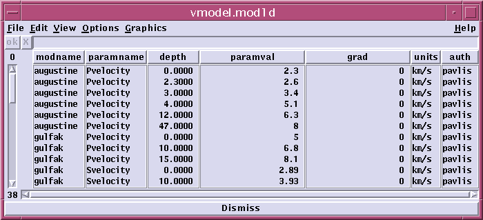

Velocity Model Database Extension Tables
Genloc uses two extension tables of the css3.0 schema to define velocity
models called mod1d and ttcalc . The contents of each
of these tables is described in detail here.
ttcalc table
Each travel time calculator that expect to access the velocity model
database is expected to register it's existence in this table. Consequently
this table is normally only edited by a developer who wants to add a new
travel time calculator to the generic tt interface. Here is the current
table viewed with dbe:
The algorithm name is used to reference a travel time method by name.
The libname attribute defines the name of the shared library used by the
generic tt interface. The actual name is generated by
prepending a "lib" prefix to the libname attribute. For example,
for libname=tttaup the shared object tt actually search for will be called
libtttaup.so.
ttentry and uentry give the actual entry point names for the travel
time and slowness vector calculators in this shared object.
mod1d table
The mod1d table is designed to hold data that defines any earth model
that can be specified as a function of depth alone. Here is
a dbe view of a sample mod1d table.

Models are given a name defined by the modname attribute that
should be used by travel time calculators to match the model name input
to the generic travel time calculator interface (see tt(3)). paramname
refers to the physical property being defined for this model name and
units give the physical units of that quantity. The actual
values assigned to the model at a given depth are determined from the depth,
paramval, and grad attributes. The depth attribute
defines the depth (in km) in the earth at which the property paramname
takes on the value paramval. The grad attribute
defines the gradient in units/km of this property below the grid
point depth. This can be used to define models made up of piecewise
linear segments or with constant velocity layers by setting grad=0 everywhere.
regmodel and regions tables
These two tables are interlinked and between themselves and with the
mod1d calculator. They are used by the ttregions calculator
to allow the use of different models and different travel time calculators
in different locations within a network. Here are examples of both
viewd by dbe:
The regmodel table defines which travel time calculator and
velocity model are to be used for a given region name (attribute regname).
The regions table defines polygonal regions as a series of latitude-longitude
pairs that define polygonal regions (in clockwise order).